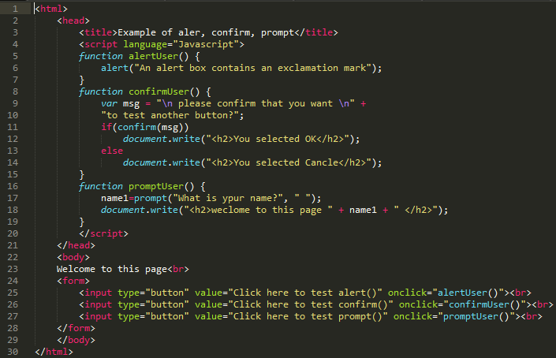
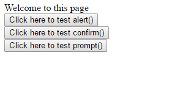
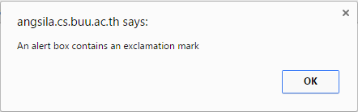
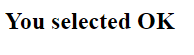
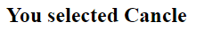
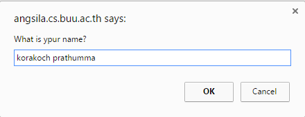
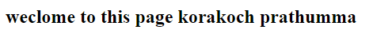

About JavaScript








1.สร้างฟังก์ชันชื่อว่า alertUser
2.โดยในฟังก์ชันมีการสร้างหน้าแจ้งเตือนขึ้นว่า An alert box contains an exclamation mark
3.สร้างฟังก์ชั่นชื่อว่า confirmUser
4.ในฟังก์ชันมีการรับค่าของตัวแปร msg โดยจะขึ้นเป็นหน้าต่างแจ้งเตือนว่า please confirm that you want to test another button?
5.ตั้งเงื่อนไขโดยถ้า msg มีการตกลงจะทำการพิมพ์ You selected OK
4.หากไม่ตกลงจะทำการเข้าเงื่อนไข else และจะพิมพ์คำว่า You selected Cancle
5.สร้างฟังก์ชัน promptUser
6.โดยจะมีตัวแปรชื่อว่า name1 รับค่าโดยมีข้อความขึ้นว่า What is ypur name?
7.ทำการพิมพ์ข้อความดังนี้ weclome to this page และตามด้วย name1 ที่เราทำการใส่ไปข้างต้น